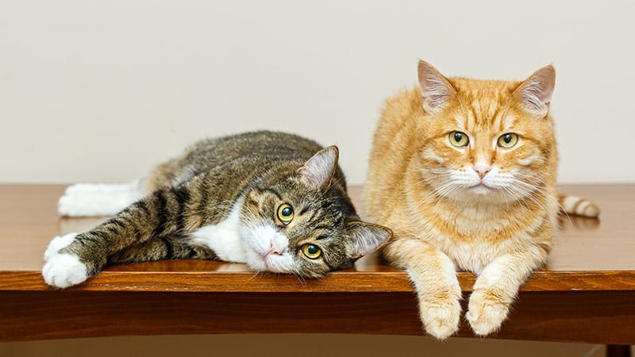

Curiosidades
Son muchas las cualidades de los gatos. Inteligentes, elegantes o ágiles son solo algunos de los calificativos que podemos utilizar para referirnos a este felino que se ha adaptado a la convivencia con los humanos y a vivir tanto en el interior de sus hogares como en las ciudades, formando lo que se denominan colonias.
Las principales características de estos animales son:
- Mamífero cuadrúpedo, con cola
- garras retráctiles y pelo que recubre todo su cuerpo
- Poseen unos 230 huesos que le permiten una gran flexibilidad y elasticidad.
- Destacan sus bigotes, que son pelos modificados con función sensitiva.
- Los gatos son animales vivíparos, lo que quiere decir que paren a sus crías vivas en camadas de unos 4-5 gatitos
- Destaca también su sentido de la vista, del oído y del olfato, lo que facilita su vida como animal depredador

Aspectos clave para saber cómo cuidar a tu gato
- Jugar con tu gato: lo mantiene activo, previniendo el sobrepeso y la obesidad.
- La alimentación:Los gatos, a diferencia de los perros, son carnívoros estrictos, por lo que requieren una elevada cantidad de proteínas en su dieta. Estas deben estar presentes al menos en un 25% del total del alimento, siendo ideal en torno al 40%. Otros nutrientes que debe contener el alimento son los hidratos de carbono, las grasas, las vitaminas y los minerales.
- Vacunación y desparasitación:Los gatos pueden verse afectados por diversas enfermedades infecciosas, siendo la vacunación la mejor manera de controlarlas. La desparasitación también es importante para prevenir enfermedades causadas por parásitos externos (pulgas, garrapatas y ácaros) e internos (gusanos planos, redondos y protozoos). Además, algunas son zoonóticas, es decir, se pueden transmitir a las personas.
- Esterilización:
- La esterilización en los gatos, además de evitar las camadas indeseadas, es muy beneficiosa por diversos motivos relacionados con la salud y el comportamiento.
- Hábitos de higiene básica:Los gatos requieren que se les cepille e incluso se les lave el pelaje con cierta frecuencia, siendo superior en los que tengan pelo largo o semilargo. Esto es importante, además de para favorecer la circulación sanguínea y darle brillo y fuerza, para prevenir las bolas de pelo que pueden llegar a obstruir el tracto intestinal.